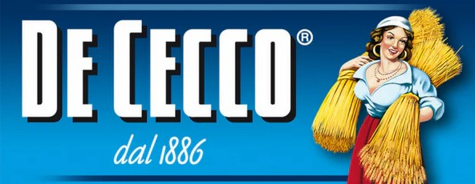

UN FUTURO SOSTENIBILE E RESPONSABILE
QUATTRO STRADE, UN'UNICA DIREZIONE VERSO LA SOSTENIBILITÀ:
produrre con cura; innovare con rispetto; impatto positivo su ambiente e comunità; innovazione e sviluppo.
SCARICA IL REPORT